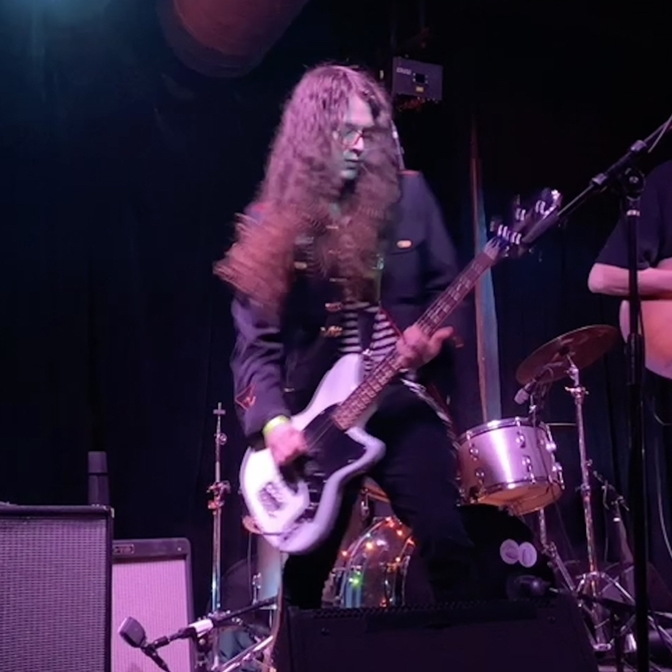

About Me
Howdy 🤠
My name is Jules, I'm based out of Dallas, Texas and I love...
💻Coding!🖥
I have been coding in one form or another since I was 15 and it seems like I just can't get away from it LOL, see my coding page for more information.
🎼Music!🎙
I have been seriously playing music since I was 12 and I play a few instruments including (but not limited to): piano, guitar, bass, drums, vocals, synthesizer, ukulele, violin, marimba (and the other mallet keyboard instruments), and a bunch of random percussion instruments. See my music page for some of the stuff I'm involved in.
🗣Languages!🌐
I had a huge multi-year linguistics phase that completely swallowed me, to the point that led me to pursue a Linguistics degree at The University of Texas at Austin (hook em). I studied French and Japanese in high school, and then Mandarin and MSA & Levantine in college. At home, I've studied to some extent (however small) Esperanto, Turkish, and Swedish. I also dabbled with colanging, which is the art of creating your own language, but I didn't get anywhere near as far into it as others.
🎮Video games!👾
While I'm nowhere near the gamer I used to be, I legit learned how to read from playing Pokémon Yellow for the Game Boy Color (shoutout to my cousin Angel for giving me his copy). Growing up poor meant that I pirated A LOT of video games and the troubleshooting/fixes I had to do to get these dodgy downloads to work led to the computer skills I have now.
🌳Nature🌿
I live for the natural beauty of the world and while I'm stuck living in a suburban concrete jungle, there's nothing quite as enjoyable than taking a quiet walk through a nice forested path. I have a few national parks such as Big Bend on my bucket list that I would like to visit at some point, but all in good time. I also plan on getting a mountain bike so I can take it on trails but they're so expensive!!
🛫Airplanes!🛬
When I was a kid, my biggest wish was to be able to fly, so it's only natural that I became intersted in aviation. I've spent WAY too many hours on flight simulators growing up and I'm the go-to pilot for my online friend group whenever we play games like Arma 3 or GTA V. When flying, my favorite seat is the window seat by either wing. I hope to be able to get my pilot license at some point in my life and if I'm ever rich enough, to buy my own cute little Cessna.
In short
As you can see I have a lot of interests!! I have a never-ending curiousity for the world and I think it's important to be interested in everything the human experience has to offer.